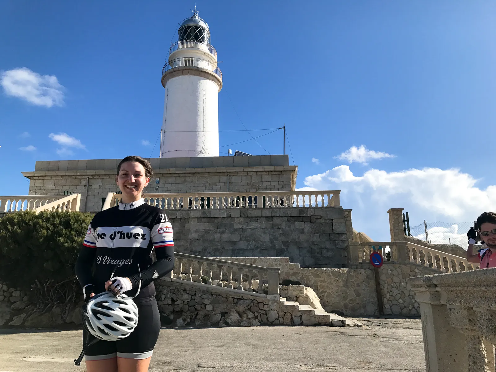
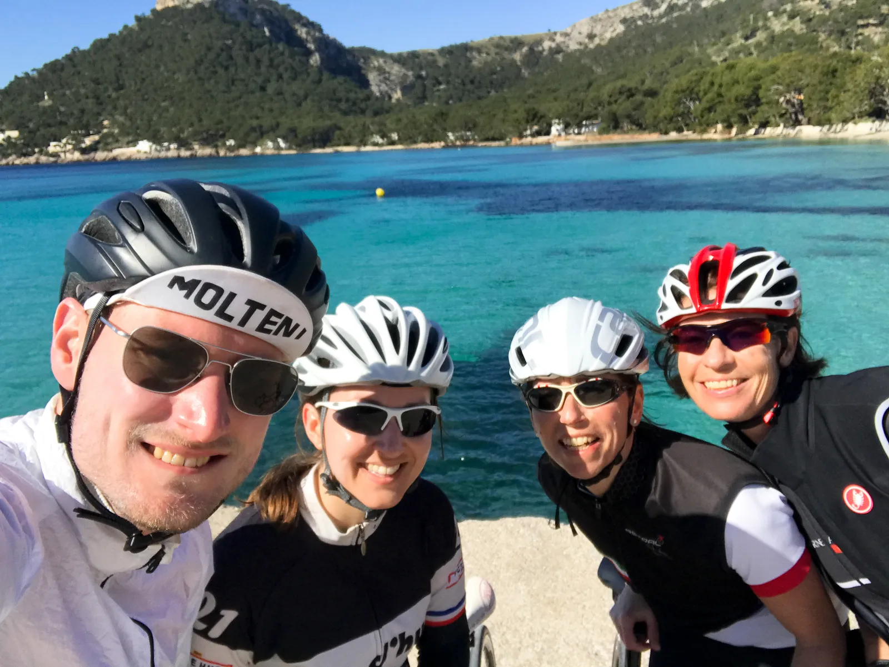

Træningslejr Mallorca 5/5: Cap de Formentor og hjemrejse

Sidste dag af træningslejren (læs om første dag, anden dag, tredje dag, fjerde dag), og mens nogen af rytterne har en tidlig hjemrejse, forsøger de tilbageværende sig endnu en gang med vindens mødested: Cap de Formentor. Se galleri i bunden.
Træningsrute: Cap de Formentor – Purto Pollensa. 40 km. 1.00 hm.
Søndag var der tidlig hjemrejse for fire af holdets seks ryttere, mens Kasper, Maria og de to observatører endnu engang forsøgte sig med at nå Cap de Formentor, der i dag viste sig i et lidt bedre vejr.
Som at tage i Bilka
Der var tidlig afgang. Det betød at vi havde vejene helt for os selv. For på dette tidspunkt af året, er der ca. 35.000 cykelturister på Mallorca hver uge.
– Det er som at tage i Bilka, når der er tilbud på flæskesteg, udtaler observatør Tina.

Vejret var pragtfuldt, og de fire ryttere nåede helt ud til Cap de Formentor som nogen af de første på dagen.
På hjemturen blev den smukke strand besøgt endnu engang, og det obligatoriske selfie blev skudt.

Data fra træningslejren på Mallorca
Træningslejren sluttede i højt humør og med trætte ben. Holdet plus påhæng gik igennem:
- 9 plastikcykler.
- 370 km.
- 5.300 hm..
- 8 kasser lys øl.
- 75 pizzaer.
- 0 tapas.
- 34 kg. blødstegt spansk morgenmadspølse.
- 11 juniortatoveringer.
På gensyn til næste år.